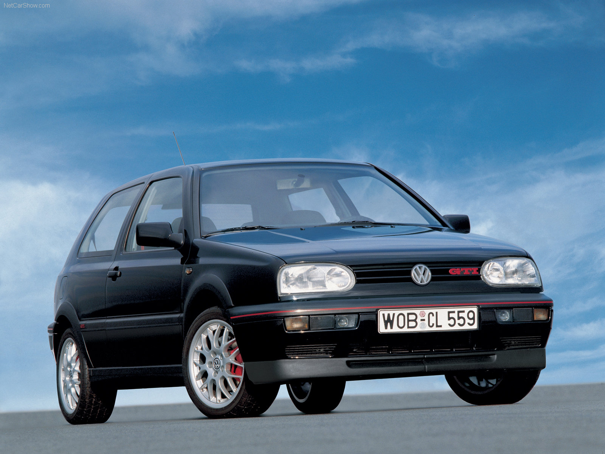

Golf 3 gti
Pour 1991, Volkswagen entame son 3e opus de sa saga Golf. Et comme d’habitude, la Golf GTI est toujours au programme.
Mais entre un poids en hausse et une performance qui stagne, la Golf 3 GTI semble plus compter sur son design solide et
robuste ainsi que sur sa réputation que sur ses performances pures. La Golf GTI serait-elle en perdition ?!
Une fois au volant, le doute peut être levé, n’est pas Golf GTI qui veut…
Moins sportive, mais toujours plus polyvalente, c’est au fil des kilomètres que la Golf 3 GTI se dévoile et non face au chrono !
Bien aidé par l’étagement de sa boîte 5 manuelle, la Golf 3 GTI n’excite pas l’aiguille du chronomètre (198 km/h et 31″2 au km DA),
mais s’offre de belles reprises et distille un plaisir de conduite réel.
